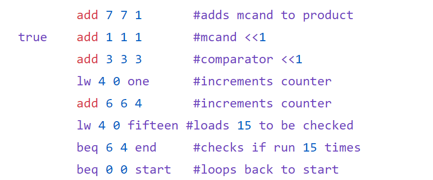

Discovering Antibiotic Resistance Gene
I worked on a research project where I created a data pipeling to analyze bacterial DNA. By comparing the DNA of antibiotic resistant bacteria to susceptible bacteria, we were able to narrow down genes responsible for the resistance and we discovered an undocumented resistance gene. The research has since been published in the academic journal, Antimicrobial Agents and Chemotherapy by the American Society for Microbiology.
Electronic Data Interchange Software
At my internship at SPS Commerce, I work on software that helps businesses communicate data with each other. The software converts formats, enters data to databases as each business partner needs specifically.
Assembler - Computer Architecture
During the class Computer Architecture at the University of St. Thomas, I wrote a program that would assemble assembly code into binary machine code using C as a language. I got to learn about how instructions are stored and interpreted in the computer.
